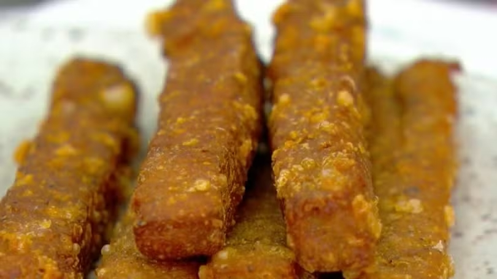
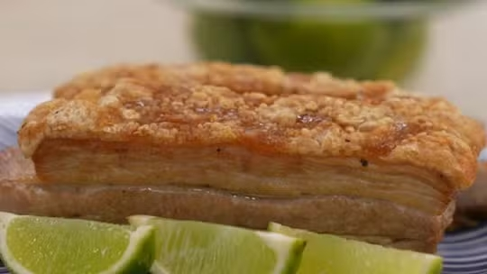

Palitos de frango com queijo
Ingredientes:
300 gramas de filé de peito de frango picadinho (na faca ou processador), Meia colher de sopa de páprica defumada, Meia colher de sopa de pimenta-do-reino, 2 colheres de sopa de farinha panko, 2 colheres de sopa de farinha de trigo, 50 gramas de queijo parmesão ralado grosso, Sal a gosto
Modo de Preparo:
Panceta de porco à pururuca
Ingredientes: Ingrediente 1, Ingrediente 2, Ingrediente 3...
Modo de Preparo: Descrição do modo de preparo...
Receita 3

Ingredientes: 300 gramas de filé de peito de frango picadinho (na faca ou processador)
Meia colher de sopa de páprica defumada, Meia colher de sopa de pimenta-do-reino
2 colheres de sopa de farinha panko, 2 colheres de sopa de farinha de trigo
50 gramas de queijo parmesão ralado grosso, Sal a gosto
Modo de Preparo: Descrição do modo de preparo...